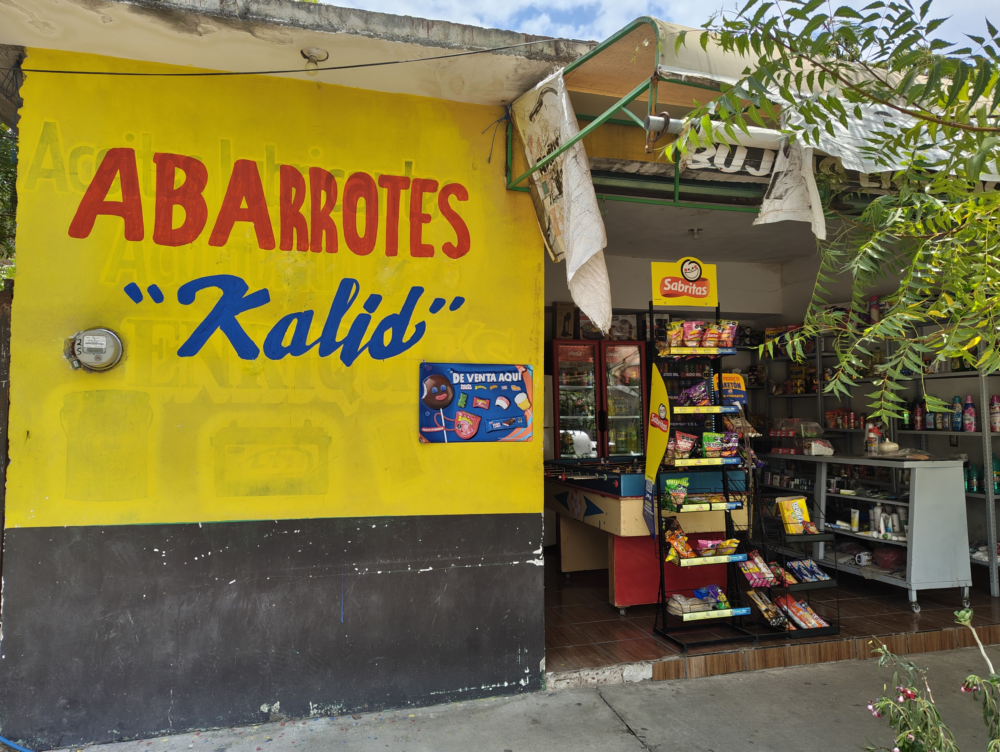

NUESTRA HISTORIA
Mi nombre es Karolina Sosa, soy maestra de la primaria Lázaro Cárdenas y hace dos años decidí abrir una pequeña tienda llamada Kalid. Todo comenzó como un sueño sencillo para no solo depender de mis ingresos como maestra, con pocos productos y muchas ganas de salir adelante para ofrecerle una mejor vida a mis hijos, los cuales me ayudan a atender la tienda cuando yo no estoy.
Salimos adelante
Con el paso del tiempo y la ayuda de mis hijos, la tienda creció gracias al apoyo de los vecinos ya que me compran productos a diario, en especial mis vecinos del taller eléctrico del Güero, ya que son mis principales clientes. Hoy en día, mi tienda de abarrotes sigue siendo un lugar chico pero con más productos e incluso contamos con máquinas de arcade y futbolito para el entretenimiento de mis clientes más jóvenes, ahora la tienda es un lugar donde las personas encuentran lo necesario y también un espacio de convivencia.
